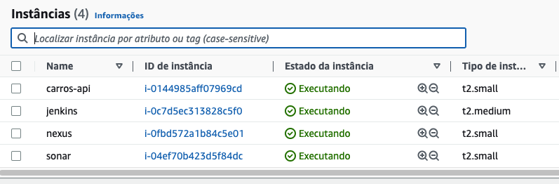

Neste tutorial de exercícos vamos criar 4 instâncias com seus respectivos tipos na aws com os ativos de infra infra do curso de infraestrutura Ágil
Todas as 4 instâncias deverão ter o grupo de segurança de entrada para todas as portas e um "IP Elástico" para acesso externo
Bom exercício.